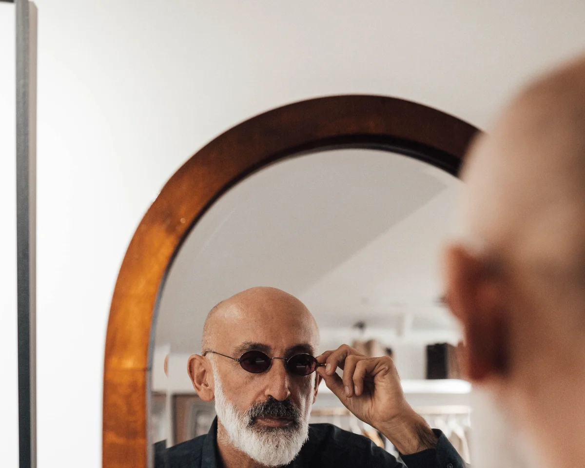

Asesoría de imagen
por videollamada
Morfología, colorimetría y personalidad. La montura que te representa, desde donde estés.

Unas gafas no son solo un instrumento óptico. Son lo primero que ve el mundo de ti — antes de que hables, antes de que te muevas. La montura que llevas comunica algo sobre quién eres, y esa decisión merece más que cinco minutos frente a un expositor eligiendo por intuición.
En la asesoría online trabajamos tu caso desde tres ángulos a la vez: tu morfología facial, tu colorimetría y tu personalidad. Analizamos la forma de tu rostro para determinar qué geometrías de montura crean equilibrio y cuáles compiten con tus rasgos. Estudiamos tu paleta de color — tono de piel, color de ojos y cabello — para identificar qué materiales y acabados te favorecen y cuáles te apagan. Y hablamos de ti: cómo quieres que te vean, qué proyectas, qué rol juegan las gafas en tu imagen cotidiana.
Con ese análisis preparado, la videollamada no es una sesión de prueba aleatoria sino una presentación razonada: te mostramos cada montura, te explicamos por qué funciona para tu caso concreto y te damos opciones reales para comparar. Si llevas graduación, la integramos desde el principio — porque el tipo de lente condiciona la montura y eso hay que saberlo antes de elegir, no después.
El servicio nació para llegar más allá de Lugo. Enviamos las gafas a cualquier punto de España, con seguimiento y con la posibilidad de volver a vernos online si hace falta algo.
Nuestra metodología
Tres ejes para encontrar
tu montura ideal
Morfología facial
Analizamos la geometría de tu rostro — proporción entre frente, pómulos y mandíbula, distancia interpupilar, altura del puente nasal — para determinar qué formas de montura crean armonía y cuáles distorsionan. No hay una fórmula única: aplicamos criterio para tu cara específica, no para un arquetipo genérico.
Colorimetría
Tu tono de piel, el subtono frío o cálido, el color de tus ojos y tu cabello determinan qué paleta de montura te favorece. Aplicamos análisis de colorimetría estacional y de contraste para identificar qué colores y materiales — acetato, metal, carey, titanio — amplifican tu presencia y cuáles te restan luminosidad.
Personalidad e imagen
Las gafas construyen imagen antes de que hables. Trabajamos contigo qué quieres proyectar — autoridad, creatividad, discreción, carácter — y buscamos monturas que refuercen esa lectura. Una montura bien elegida no pasa desapercibida: hace que quien te mira vea exactamente lo que quieres que vea.
El servicio completo
Qué incluye
la asesoría
Estudio previo
Antes de la videollamada analizamos tu morfología, tu colorimetría y tu perfil de imagen con la información que nos facilites — fotos de frente y perfil, referencias de estilo, graduación si la tienes. Llegamos a la sesión con trabajo hecho.
Selección razonada
Durante la videollamada te presentamos entre 6 y 10 monturas seleccionadas para tu caso. Para cada una te explicamos por qué funciona o no — forma, color, material, proporción — y comparamos opciones con criterio, sin prisa.
Prescripción optimizada
Si llevas graduación, la integramos desde el principio. Evaluamos qué tipo de lente resuelve mejor tu caso — monofocal, progresiva, ocupacional — y nos aseguramos de que la montura elegida sea técnicamente compatible con ella.
Paso a paso
Cómo es
el proceso
Reservas tu sesión
Elige fecha y hora a través de nuestro sistema de citas online. Al reservar te pedimos una foto de frente, una de perfil y tu graduación actual si la tienes. Con eso empezamos el estudio previo.
Preparamos tu selección
Con la información recibida, seleccionamos entre 6 y 10 monturas del catálogo que encajen con tu morfología, tu estilo y —si aplica— con el tipo de lente que necesitas. Llegamos a la llamada con trabajo hecho.
Videollamada contigo
Te mostramos cada montura, explicamos por qué la hemos elegido, resolvemos dudas y comparamos opciones juntos. La sesión dura entre 30 y 45 minutos. Por Google Meet o WhatsApp Video, según prefieras.
Recibes tus gafas
Si decides comprar, montamos las lentes con tu graduación y te las enviamos a casa. Si estás en Lugo o alrededores, también puedes recoger en tienda. El ajuste final lo hacemos en otra videollamada si es necesario.
Precio del servicio
50 € — incluidos
en la compra
La asesoría tiene un precio de 50 €. Si a raíz de la sesión decides comprar unas gafas en Panisse — montura con o sin lentes — esos 50 € quedan incluidos en el precio final. La asesoría no tiene coste adicional si cerramos un trato.
El precio cubre el estudio previo, la videollamada completa y el seguimiento posterior. No hay costes ocultos ni paquetes. Si al final no compras, la asesoría vale 50 € y te queda el criterio para elegir mejor en cualquier óptica.
El envío a domicilio en territorio nacional es gratuito a partir de 150 €. Por debajo de ese importe o para envíos internacionales, aplicamos tarifa de mensajería según destino.
Para quién es
Un servicio para
quien no está en Lugo
Vives fuera de Galicia
Conoces Panisse por las redes, por una recomendación o por el catálogo de marcas que no encuentras en tu ciudad. La asesoría online es la forma de acceder al mismo servicio sin viajar.
Llevas graduación compleja
Progresivos, astigmatismos altos, anisometropías, prismas. Casos en los que la montura y la lente tienen que trabajar juntos desde el principio y no se puede elegir uno sin pensar en el otro.
Quieres una segunda opinión
Llevas gafas que no terminan de adaptarse, o te han recomendado algo y no estás seguro. La asesoría no requiere comprar — puedes venir solo a contrastar criterio con un óptico independiente.
No sabes por dónde empezar
Nunca has comprado gafas con criterio, o llevas años con las mismas y no sabes qué ha cambiado en catálogo. La sesión funciona también como introducción a lo que hay disponible para tu caso.
Lo que nos preguntan
Preguntas
frecuentes
¿Necesito saber mi graduación de antemano?
No es imprescindible. Podemos trabajar con la montura sin graduación, o con la graduación que tengas aunque no sea reciente. Si quieres que la recomendación de lente sea más precisa, lo ideal es tener una revisión de los últimos dos años. Si no la tienes, te orientamos igualmente y te indicamos si conviene actualizarla antes de montar las lentes.
¿Cuánto dura la videollamada?
Entre 30 y 45 minutos. Depende del caso: si llevas una graduación sencilla y tienes el estilo claro, puede resolverse en menos tiempo. Si hay dudas, comparaciones o queremos explorar varias opciones con calma, nos tomamos el tiempo que haga falta. No cortamos la sesión a los 30 minutos si el trabajo no está terminado.
¿Enviáis las gafas a domicilio?
Sí, enviamos a toda España con mensajería de confianza y seguimiento en tiempo real. Si estás en Lugo o alrededores, también puedes recoger en tienda en Rúa do Teatro. Si las gafas llevan graduación, hacemos una verificación óptica antes del envío y te contactamos si detectamos algo que revisar.
¿Los 50 € se descuentan siempre de la compra?
Sí, siempre que la compra se haga en Panisse a raíz de la sesión — ya sea en el mismo momento o en las semanas siguientes. No tiene fecha de caducidad inmediata: si necesitas tiempo para decidir, los 50 € siguen siendo válidos. Si finalmente no compras nada, la asesoría vale 50 € y eso es lo que se cobra.
¿Por qué plataforma se hace la llamada?
Por Google Meet o por videollamada de WhatsApp, según lo que te resulte más cómodo. Al confirmar la reserva te enviamos el enlace o el número, y te aseguramos que la calidad de vídeo sea suficiente para que puedas ver bien los detalles de cada montura.
¿Puedo hacer la asesoría aunque no tenga graduación?
Sí. La asesoría tiene sentido también para gafas de sol o gafas sin graduación. El trabajo de encontrar una montura que te favorezca — en forma, proporciones y estilo — es el mismo con o sin lente graduada.
Reserva tu asesoría
de montura online
Elige fecha, comparte tus fotos y tu graduación. Nosotros llegamos a la videollamada con la selección preparada para tu caso.